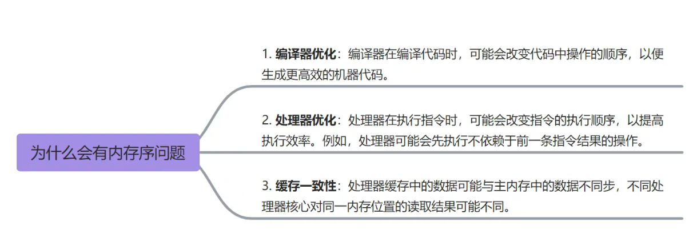

08 并发编程
并发编程
C++11之后提供了丰富的库函数来进行并发编程，现在分模块来依次做笔记
线程创建
C++11主要使用std::thread来创建一个新的线程，要创建一个线程，需要传递一个可调用对象（函数、lambda 表达式、函数对象、std::function）作为参数。
1 | // 构造函数 |
使用例子：
1 |
|
除了std::thread，也可使用std::jthread类（==C++20才引入==）创建线程，它和std::thread的用法基本一致，只不过它遵循了RAII原则，不需要用户手动的调用.join()，而是放在了析构函数里自动调用
线程的生命周期
一般来说，std::thread实例与其创建的线程的生命周期是绑定的，不应该在子线程执行完毕前销毁std::thread实例，这会导致异常。
- 在销毁
std::thread实例之前，可以调用.join()函数，来阻塞主线程直到子线程执行完毕，再销毁std::thread实例，这也算一种线程同步的策略
不是所有线程都可以调用
.join()函数，可以用.joinable()来判断其是否可以
- 也可以用
.detch()函数分离std::thread实例与其创建的子线程，这样的话子线程将由操作系统负责调度，且在子线程结束前销毁std::thread实例也没关系
线程调度
在操作系统层面，线程调度是由操作系统内核负责的，它根据线程的优先级、系统负载、线程的状态等因素来决定哪个线程应该获得CPU的时间片。
作为程序员，我们不能直接控制线程调度，但我们可以通过一些手段来影响或请求操作系统进行线程调度。以下是一些在C++中可以采取的方法：
std::this_thread::yield()
std::this_thread::yield() 函数可以让当前线程放弃其在CPU上的执行，暗示操作系统调度器可以调度另一个线程来运行。然而，操作系统可以选择忽略这个暗示。
1 |
|
2.互斥锁
一个线程拿到锁后，其他线程如果尝试获取该锁，拿不到的线程会阻塞进而发生线程调度
3.线程休眠
std::this_thead::sleep() 函数和yeild()类似，本身不会直接促使线程调度，但它会导致当前线程主动放弃CPU，进入休眠状态。在这段时间内，操作系统的调度器可以选择执行其他线程或进程。
1 |
|
4.I/O操作
进行I/O操作（如文件读写、网络通信）时，线程往往会被阻塞，操作系统会在此时进行线程调度。
线程同步(通信)
1.互斥锁
C++11使用std::mutex来创建一个互斥锁实例，并使用.lock()或者.unlock()来控制线程访问临界区的资源
- 使用使用
.lock()会阻塞当前线程直到拿到锁，如果想在拿不到锁时立即返回，可以使用.try_lock()
2.锁保护
C++11引入std::lock_guard类来简化互斥锁的使用，它是基于 ==RAII原则==设计的资源管理类，能够保证：
- 在创建
std::lock_guard实例时，对传入的互斥锁形参自动加锁（没拿到锁会阻塞） - 在
std::lock_guard实例销毁时自动解锁
1 | void increment() { |
3.读写锁
读写锁其实是引入了悲观锁-乐观锁的概念，如果是“读”操作的话，那么就认为不会修改共享资源，所以是“乐观锁”，就不用加锁了；反之如果是写操作，则肯定修改共享资源，则是”悲观锁“
要使用读写锁，得使用==C++17==才引入的
std::shared_mutex
std::shared_mutex提供了2种使用方式：
- 独占式锁定
.lock()：当有一个线程要对共享资源写操作时，应该使用这种锁定，此时只有一个线程能拿到锁 - 共享式锁定
.lock_shared()：当有一个线程要对共享资源读操作时，应该使用这种锁定，此时多个需要读的线程可以共享这个锁
为了避免每次要手动的上锁和解锁，C++也为
std::shared_mutex提供了基于RAII原则锁的包装类：std::shared_lock和std::unique_lock
各个锁包装类有以下区别：
std::lock_guard只支持std::mutex的独占锁定std::unique_lock支持std::mutex和std::shared_mutex的独占锁定std::shared_lock只支持std::shared_mutex的共享锁定
1 | std::shared_mutex rw_mutex; |
4.原子操作
在C++中，原子操作是指在多线程环境中，对数据进行的操作是不可分割的，即在执行原子操作的过程中，不会被其他线程中断（CPU没拿到资源时会忙等），C++11标准引入了对原子操作的支持，主要通过
<atomic>头文件提供的原子类型和函数来实现。
原子变量
C++标准库提供了多种原子类型，包括：
std::atomic<T>：模板类，支持多种数据类型（如int,float,double,bool等）std::atomic_flag：用于实现简易自旋锁和其他同步机制std::atomic_bool、std::atomic_char、std::atomic_uchar…：特定类型的原子类型
原子操作
原子操作包括但不限于以下几种：
load()：原子地读取原子对象的值store()：原子地将一个值写入原子对象exchange()：原子地交换原子对象的值compare_exchange_weak()和compare_exchange_strong()：原子地比较并交换（CAS）原子对象的值，用于实现==无锁==的数据结构
1 | int expected = 0; |
fetch_add(),fetch_sub(),fetch_and(),fetch_or(),fetch_xor()：原子地对原子对象执行相应的算术或位操作，并返回操作前的值
原子变量只能通过原子操作函数或者被重载的运算符来实现原子操作
内存序问题
在多线程编程中，内存序问题是由编译器等的优化导致的。为了提高性能，编译器可能对内存操作的顺序进行重排，这种重排对于单线程程序没有影响，但是可能造成多线程程序中数据的竞争

原子操作可以手动指定对内存操作的顺序，包含以下选项：
memory_order_relaxed：没有同步或顺序的约束，只保证操作的原子性memory_order_acquire：确保此操作前的所有读操作不会被重排到此操作后memory_order_release：确保此操作后的所有写操作不会被重排到此操作前memory_order_acq_rel：结合了memory_order_acquire和memory_order_release的效果memory_order_seq_cst：顺序一致性，保证所有线程的操作按代码原始顺序发生
不管内存序是什么，都不会影响操作的原子性
例子：
1 |
|
5.信号量
6.条件变量
条件变量用于线程间的等待和通知机制，它允许一个或多个线程阻塞等待直到被唤醒（或超时），而其他线程可以改变这个条件，并通过通知（或广播）机制唤醒等待的线程。
C++11的
<condition_variable>头文件提供了std::condition_variable条件变量类
使用条件变量时，通常包含以下部分：
- 条件变量实例：可以使用
std::condition_variable或者std::condition_variable_any - 独占式互斥锁：
std::condition_variable必须使用独占锁std::unique_lock<std::mutex>；std::condition_variable_any可以使用共享锁或独占锁 - 共享条件：各线程共享的一个变量，阻塞线程被唤醒时，需要等待共享条件被修改为指定值 才不会继续被阻塞
- 生成者线程：用于修改共享条件并用条件变量唤醒阻塞线程
- 消费者线程：用于等待被条件变量唤醒
使用条件变量的步骤
- 初始化互斥锁：首先需要一个互斥锁来保护共享资源。
- 消费者线程等待：在等待线程中，先锁定互斥锁，然后使用条件变量的
.wait()释放锁并挂起线程，直到被唤醒或超时 - 修改共享条件：在通知线程中，在事件完成后修改共享条件，注意：修改前必须拿到锁，修改后必须释放锁
- 生产者唤醒消费者线程：在条件满足后，在通知线程中调用条件变量的
.notify_one()或者.notify_all()来唤醒被阻塞的线程并释放锁，被唤醒的线程将拿到锁，继续执行后边的东西
关键函数
1 | void wait(std::unique_lock<std::mutex>& lock); |
- 第二个版本除了被
notify唤醒，还可以在阻塞前通过判断stop_waiting这个表达式是否为真来避免阻塞
相当于
1 | while(!pred) |
1 | template< class Rep, class Period > |
- 该版本又新增了个超时时间，如果超过一个时间还没被唤醒，就自动唤醒
以下是一个线程唤醒另一个线程的例子：
1 |
|
以下是一个线程超时自动被唤醒的例子：
1 |
|
虽然没有手动唤醒，但是worker线程会在3s后自动被唤醒并判断是否满足了条件ready == true并返回一个bool值
但是这个例子不能判断到底是超时唤醒还是满足被主动唤醒，可以用.wait_for()的另一个重载形式来判断，其将返回一个std::cv_status类型的变量